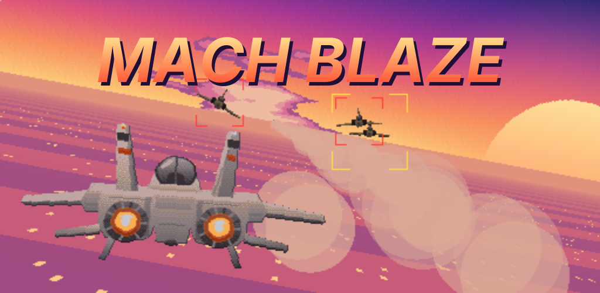

Mach Blaze

Papel de parede animado para Android: um voo de caça retrô sem fim, no estilo dos fliperamas de sprites escalonados. Um F-14 atravessa 23 fases com combates, mísseis, tonneaux, reabastecimento, pousos na base e no porta-aviões, sol real e clima.
Android live wallpaper: an endless retro jet flight in the style of late-80s sprite-scaling arcade shooters. An F-14 flies 23 stages with dogfights, missiles, barrel rolls, refuelling, base and carrier landings, a real sun and weather.
Quero testar antes do lançamento · Test it before launch
Política de privacidade · Privacy policy · labs@moskwen.com · Moskwen Labs